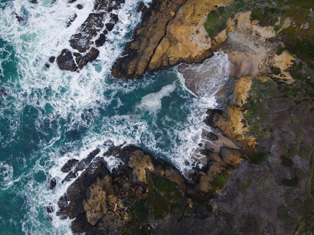

Our Story
Pacific Trails Resort was founded with a simple goal: to create a peaceful coastal retreat where guests can reconnect with nature and escape the stress of everyday life. Nestled along the scenic California coastline, our resort offers a unique blend of outdoor adventure and relaxation.
We believe that nature has the power to restore balance, which is why we offer experiences like hiking through coastal trails, kayaking along the ocean, bird watching at sunrise, and relaxing yoga sessions. Whether you're seeking adventure or quiet reflection, Pacific Trails provides an environment where you can unwind and recharge.
Our team is passionate about creating memorable experiences for every guest. From maintaining beautiful trails to guiding outdoor activities, we are dedicated to preserving the natural beauty of our surroundings while offering exceptional hospitality.

Our Mission
Our mission is to provide a welcoming retreat where guests can experience the outdoors in a meaningful way. We aim to promote wellness, sustainability, and a deep appreciation for nature through every aspect of our resort.